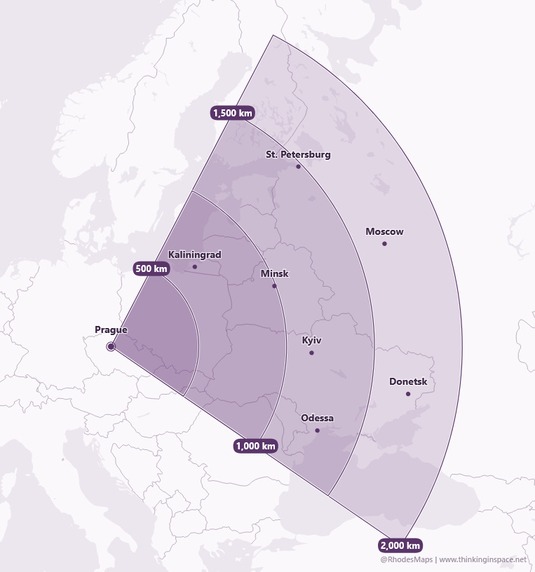
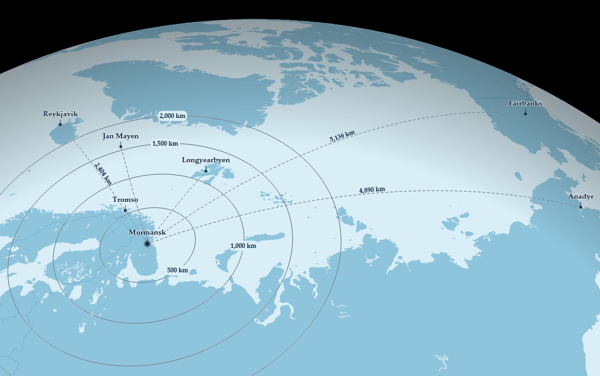
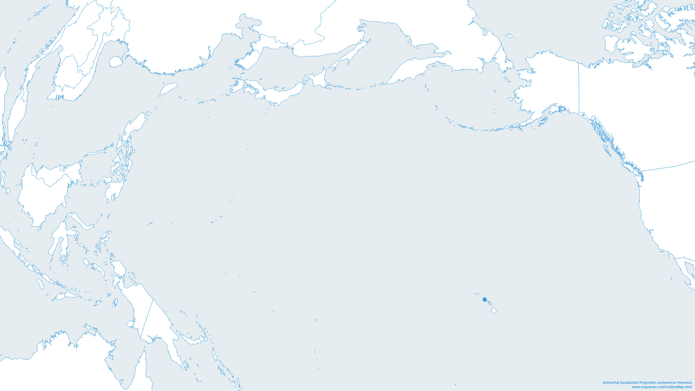
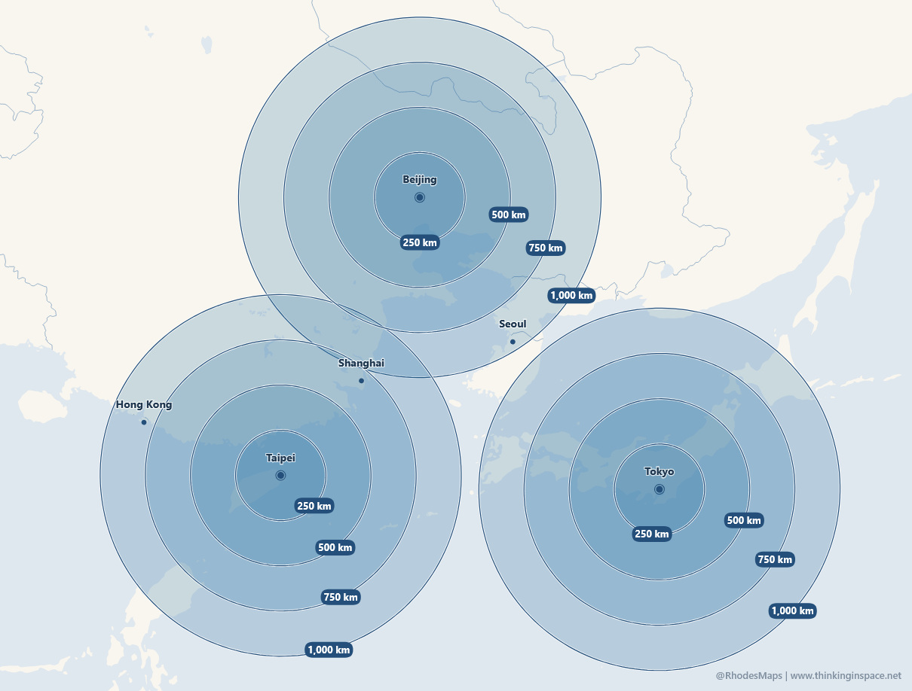

Directional range
Range Fan
Map a distance sector from a selected origin, bearing, and fan width.
Rhodes Maps
Fast, browser-based tools for clean range, route, outline, and projection maps.

Directional range
Map a distance sector from a selected origin, bearing, and fan width.

Routes and range rings
Draw geodetic routes, labeled places, and range rings on compact map projections.

Clean geography
Create uncluttered country and region outline maps for reference, teaching, and analysis.

Multiple origins
Compare repeated distance rings across several places with optional reference labels.